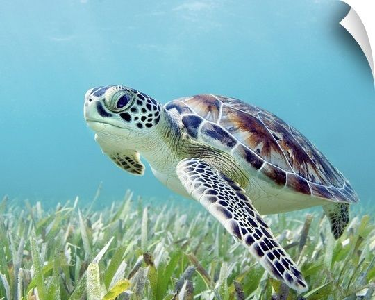
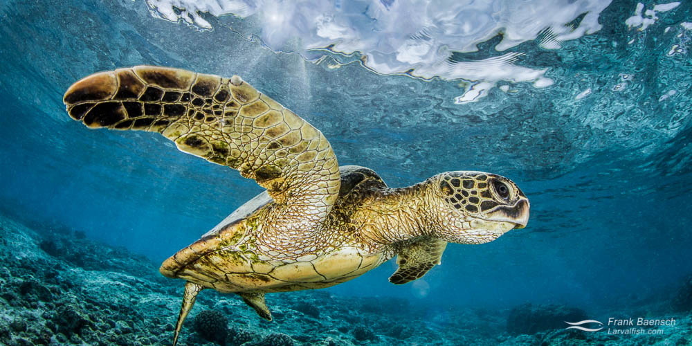
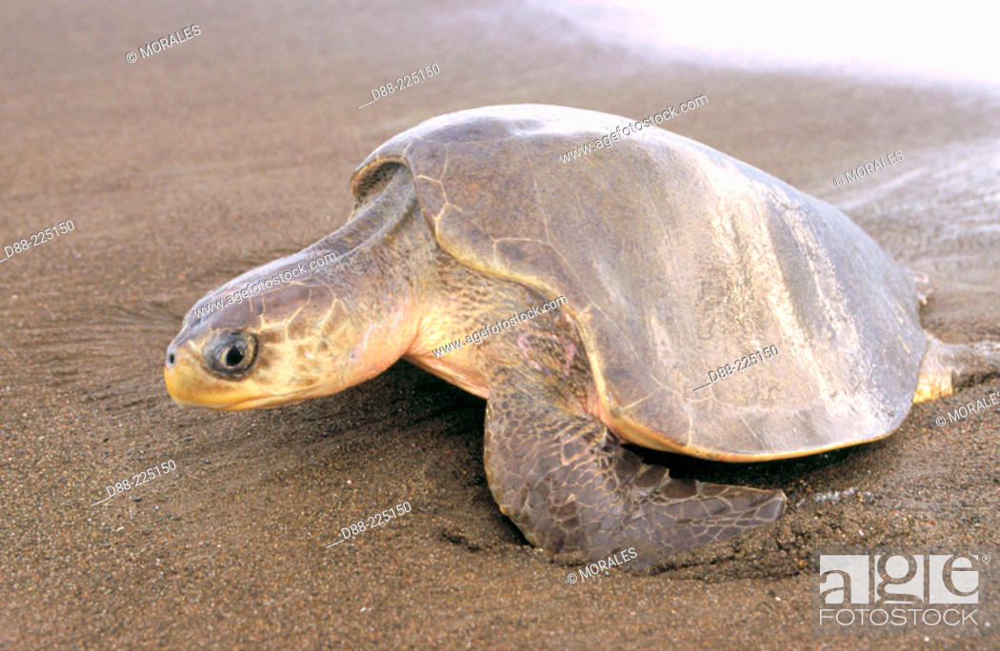
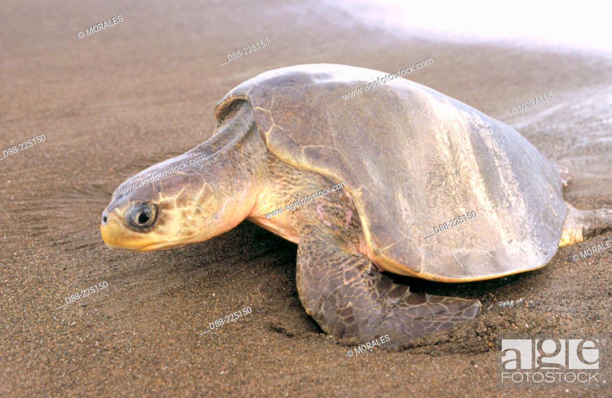

Green Sea Turtle (Chelonia mydas)
The green turtle is one of the largest sea turtles and the only herbivore among the different species. Green turtles are in fact named for the greenish color of their cartilage and fat, not their shells. In the Eastern Pacific, a group of green turtles that have darker shells are called black turtles by the local community. Green turtles are found mainly in tropical and subtropical waters. Like other sea turtles, they migrate long distances between feeding grounds and the beaches from where they hatched. Classified as endangered, green turtles are threatened by overharvesting of their eggs, hunting of adults, being caught in fishing gear and loss of nesting beach sites.



 
